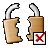

Vous allez saisir votre mot de passe dans un formulaire d'authentification ou de modification.
Si l'icône affichée en bas de la page est un cadenas «fermé», votre mot de passe circulera sur le réseau sous forme d'une chaîne cryptée. |
|
|  | En revanche, si l'icône affichée en bas de la page est un cadenas «brisé», votre mot de passe circulera en clair sur le réseau, ce qui signifie que le navigateur que vous utilisez ne permet pas le cryptage de votre mot de passe. Vous pouvez choisir de continuer ou bien d'utilser un navigateur qui permet ce cryptage (Mozilla, Konqueror,Opéra, IE...). |